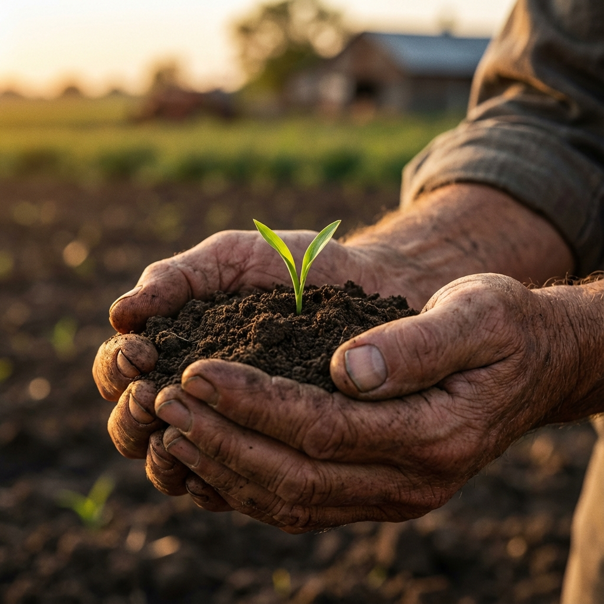
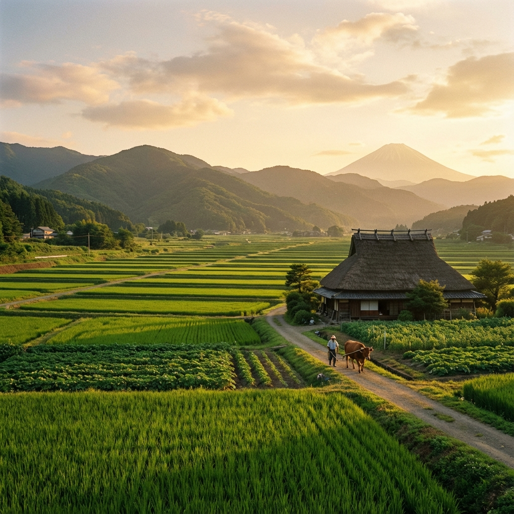

私たちのこだわり

全ての命は、土から。
美味しい野菜を作る一番の近道は、野菜にとって居心地の良い「土」を用意してあげることだと私たちは考えています。
化学肥料に頼らず、落ち葉や米ぬかなど、自然由来のものを時間をかけて発酵させた堆肥を使用しています。
ふかふかの土の中で微生物たちが元気に働くことで、野菜は生命力溢れる味になります。

風景を守る農業。
農業は、その土地の風景を作ることでもあります。
四季折々の美しさを見せる里山の風景を、次の世代に残したい。
農薬の使用を極限まで抑え、生き物たちが共生できる環境を守りながら、持続可能な農業を実践しています。
夕暮れ時に赤とんぼが舞い、夏には蛍が飛ぶ。そんな豊かな自然環境こそが、ドドンコ農園の財産です。